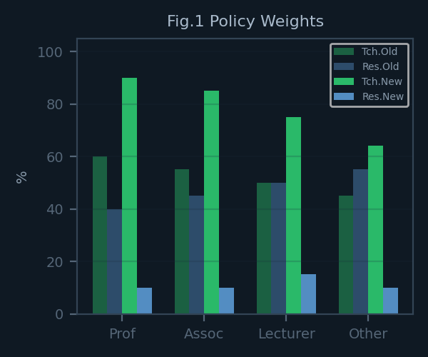
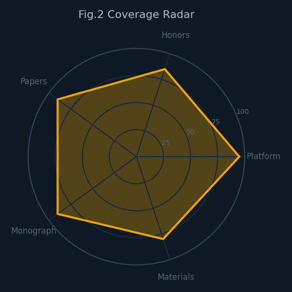
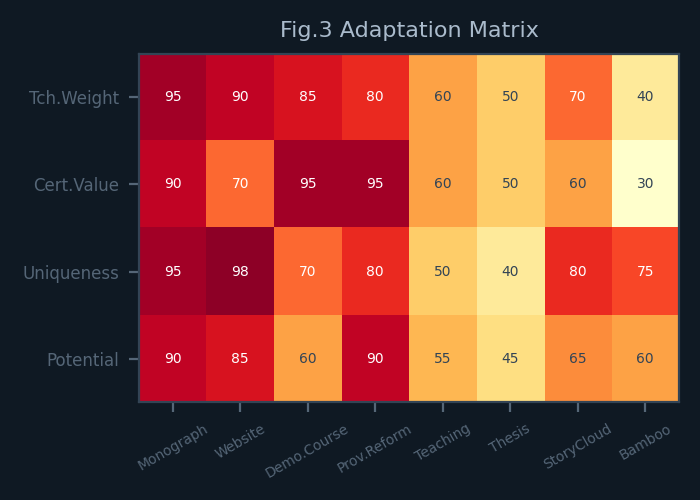
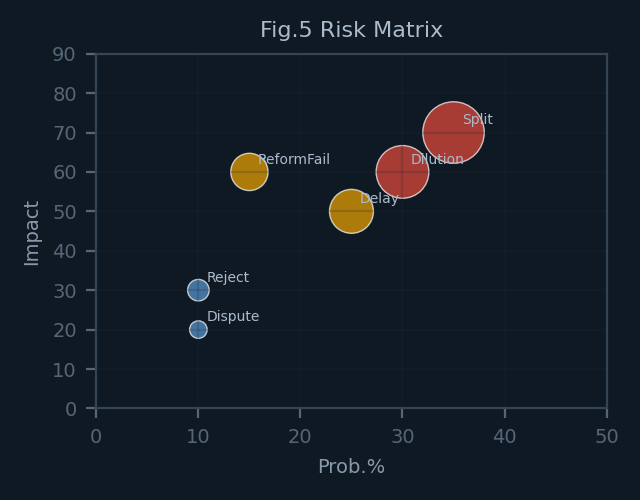
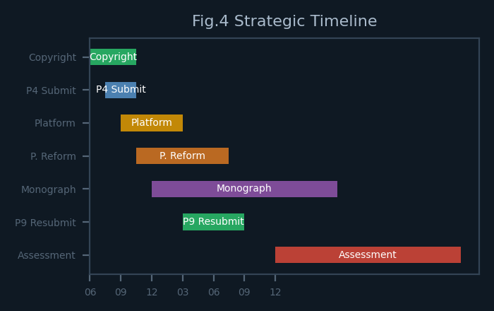
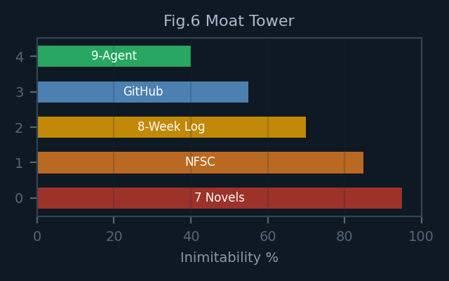

成都大学建筑与土木工程学院 2026 绩效新政，教授教学权重从约 60% 提升至 90%～95%，科研压缩至 5%～10%。本文以黄正文教授既有成果——学术专著 1 部、系列论文 10 篇、数字浏览页全套、课程思政精品示范、校级教学资源建设重点项目、普惠教育纪实小说故事云素材教改探索——逐项对标新政，构教学-科研双维适配矩阵，评 6 大风险与 4 大机会窗口，提分阶段战略之议。析之可见：黄正文教授三载教学中心之布局，与新政若合符节，先发优势显豁，竞争壁垒初显。
关键词：绩效分配；教学导向改革；战略适配度；NFSC 教学法；成都大学
中图分类号：G647 文献标识码：A
Chengdu University's 2026 performance pay reform significantly raises teaching weight for professors from ～60% to 90-95%, while compressing research to 5-10%. This analysis maps Professor Huang Zhengwen's existing portfolio against the new policy, constructs a dual-dimension adaptation matrix, assesses risks and opportunities, and provides phased strategic recommendations. Findings indicate strong pre-adaptive alignment conferring significant first-mover advantage.
Keywords: performance-based pay; teaching-oriented reform; strategic alignment; NFSC pedagogy; Chengdu University
本报告所据为《建筑与土木工程学院绩效工资分配办法（征求意见稿）》（2026 年 5 月版），由学院行政办公室面征全体教师修订意见，系〔2025〕21 号文件之修订。拟自 2026 年秋季学期正式施行。
| 职称层级 | 教学权重 | 科研权重 | 机动 | 变化趋势 |
|---|---|---|---|---|
| 教授 | 90%～95% | 5%～10% | ～5% | 教学从～60%大幅提升 |
| 副教授 | 80%～90% | 10% | ～10% | 科研压缩至10% |
| 讲师 | 64%～75% | 10%～15% | ～15% | 教学为主均衡 |
| 其他 | 40% | 35% | ～25% | 机动空间最大 |
年度绩效总额中约 15% 进入超工作量与奖励资金池：超教学工作量占 5%，超科研工作量占 5%，学院核心任务完成奖励占 3%，机动调剂占 2%。教学与科研的超额空间对等，但教学基础权重远高于科研，因此超教学量实质上回报更大。

教授年教学参考量为 160 学时，副教授 96 学时，讲师 48 学时。单项奖励：专著 10,000 元，高水平论文 5,000～10,000 元，省级教改 10,000 元，校级课程思政 5,000 元，单项教学奖励 200～2,000 元。
| # | 成果 | 类型 | 状态 | 适配度 |
|---|---|---|---|---|
| 1 | 专著《叙事·门户·智能体》 | 教学法专著 | 版权登记中 | ★★★★★ |
| 2 | 数字浏览页全套 | 教学平台 | 已上线 | ★★★★★ |
| 3 | 课程思政精品示范 | 教学荣誉 | 已获批 | ★★★★ |
| 4 | 校级教学资源建设重点项目 | 教学项目 | 建设中 | ★★★★★ |
| 5 | 固废课程教学 | 工作量 | 32学时/期 | ★★★ |
| 6 | 本科毕设指导 | 工作量 | 3套20题 | ★★★ |
| 7 | 普惠教育纪实小说故事云素材教改探索 | 教学素材 | 7部200万字 | ★★★ |
| 8 | CDU-Bamboo/English | 教学拓展 | 2门户 | ★★ |

10篇系列论文中，5篇已投稿（P1 EJEE/SSCI、P3 现代教育技术/CSSCI、P6 KM&EL/Scopus、P7 JUTLP/Scopus Q1、P10 IJAD/Scopus），1篇大修中（P9 Open Edu Studies/Scopus），1篇待投（P4 SAJE/SSCI），1篇待更新图表（P8 IR/Scopus），2篇待问卷数据（P2 KJSS、P5 ER-VET）。在科研仅占 5%～10% 的新政策下，5篇已投稿已超额覆盖考核要求。
专著（教学法+学术出版物）、P1（教学验证+SSCI）、P7（教学实证+Scopus Q1）、P6（教学迁移+Scopus）四项成果兼具教学与科研属性，可在两个维度同时计分。
热力图显示：专著和浏览页在四个评估维度上获得最高评分（90～98分），构成教学绩效核心支柱。政策适配度排序为：专著 ≈ 浏览页 > 课程思政 > 校级教学资源建设 > 故事云 > 教学课时 > 毕设 > CDU-Bamboo。

科研侧适配度：10篇论文在5%～10%的科研权重框架下，已呈显著“超额覆盖”。今之关键非增数量，乃确保已投稿成果及时见刊，为P4、P8、P9补全投稿环节。教授层级下，95%的教学权重意味着科研几乎退化为“锦上添花”——5篇已投稿已超额覆盖，剩余论文的主要价值在于学术影响力积累和职称评审支撑，而非绩效评分。
| 风险 | 概率/% | 影响 | 应对 | 优先级 |
|---|---|---|---|---|
| 课程被分走 | 35 | 高 | 申报教学创新替代课时 | 高 |
| 专著出版滞后 | 25 | 中 | 版权先行·持续推进 | 中 |
| 教改未获批 | 15 | 高 | 备选已足·不计单次 | 中 |
| 论文被拒 | 10 | 低 | 多投策略·无系统风险 | 低 |
| 平台不被认定 | 10 | 低 | 备好使用说明+数据 | 低 |
| 持续分课 | 30 | 高 | 争取新课+增加毕设量 | 高 |

| 机会 | 可能 | 收益 | 行动 |
|---|---|---|---|
| 浏览页申请校级平台 | 中 | 教学品牌+绩效 | 提交使用报告 |
| 专著后申报省教学成果奖 | 中 | 极大 | 提前备申报材料 |
| 教学法外校借鉴 | 低-中 | 学术影响力 | 扩大传播 |
| 乐养教学入素质教育 | 低 | 中 | 申报校级美育项目 |
| 时间 | 事件 | 类型 | 影响 |
|---|---|---|---|
| 2026.06 | 新政意见/版权登记/P4投稿 | 政策+行动 | 高 |
| 2026.07 | 新政实施/P8图表更新→投稿 | 政策+科研 | 中 |
| 2026.09 | 秋季学期/浏览页完善/教改推进 | 教学 | 高 |
| 2026.12 | 首阶段考核·三件套就位 | 考核 | 高 |
| 2027.03 | 专著出版（预估） | 教学 | 高 |
| 2027.06 | 全年考核·绩效满格 | 考核 | 高 |

浏览页非寻常教学平台可复者。以下五层要素构竞争壁垒：
| 层级 | 要素 | 不可复制性/% | 说明 |
|---|---|---|---|
| 1 | 7部纪实小说著作权 | 95 | 200万字原创，版权已登记 |
| 2 | NFSC四维教学法 | 85 | 原创方法论，专著+论文支撑 |
| 3 | 八周教学全程实录 | 70 | 三届学生纵向数据，不可回溯 |
| 4 | GitHub Pages零费部署 | 55 | 纯静态，推送即用 |
| 5 | 9-Agent协同设计 | 40 | AI教学系统，可复制但周期长 |

全校域内，兼原创教学内容（小说著作权）、原创教学方法论（NFSC）、原创教学数据（三年实录）、原创教学平台（浏览页）、原创AI辅助系统（9-Agent）五要素于一身者，唯黄正文一人。
| # | 行动 | 时间 | 效果 |
|---|---|---|---|
| 1 | 版权登记 | 1～2周 | 专著合法身份·绩效刚需 |
| 2 | P4投稿SAJE | 1天 | 科研补充·全部覆盖 |
| 3 | 浏览页音频上线+推送 | 1天 | 教学平台完整化 |
| 4 | 教学平台使用说明 | 1～2h | 防“不被认定”风险 |
| 5 | 教改项目跟进 | 持续 | 教学最高级别证明 |
| # | 行动 | 预期效果 |
|---|---|---|
| 1 | 新课纲+浏览页+学习园地组合申报教学绩效 | 教学满格 |
| 2 | 学院NFSC教学法公开展示 | 影响力+证明 |
| 3 | P9大修完成→重新提交 | 科研全覆盖 |
| # | 行动 | 预期效果 |
|---|---|---|
| 1 | 专著出版→申报省级教学成果奖 | 教学绩效终极证明 |
| 2 | 浏览页申请校级/省级教学平台认定 | 制度化护城河 |
成都大学建筑与土木工程学院 2026 绩效新政，标评价体系自“重科研”向“重教学”的根本转向。教授层级教学权重从约60%骤升至90%～95%，对于以论文为主要产出路径的教师构成颠覆性冲击。
黄正文教授三载布局——学术专著、数字浏览页、10篇论文（含多篇教学研究）、课程思政精品示范、校级教学资源建设、普惠教育纪实小说故事云素材教改探索——呈与新政高度吻合之“预适应”特征。此非偶合，乃对工科研究生教改方向之持续预判与践累。
核心结论：新政如东风，船早造讫。今之课题非疲于奔逐，以逸待之——序版权登记、论文投稿、教改申报诸里程碑，保每项成果于新政框架下获最大化绩效反响。课程被分其半，为主要风险；然浏览页之教学平台属性、专著之独创性、双跨成果之策略价值，构坚实安全垫与增长空间。
（日期：2026-06-07）
© 黄正文（点暇斋）· 全部作品版权登记
本报告仅供内部参考
完整 PDF 版可通过顶部下载按钮获取
© 黄正文（点暇斋）· 全部作品版权登记
本报告仅供内部参考
完整 PDF 版可通过顶部下载按钮获取